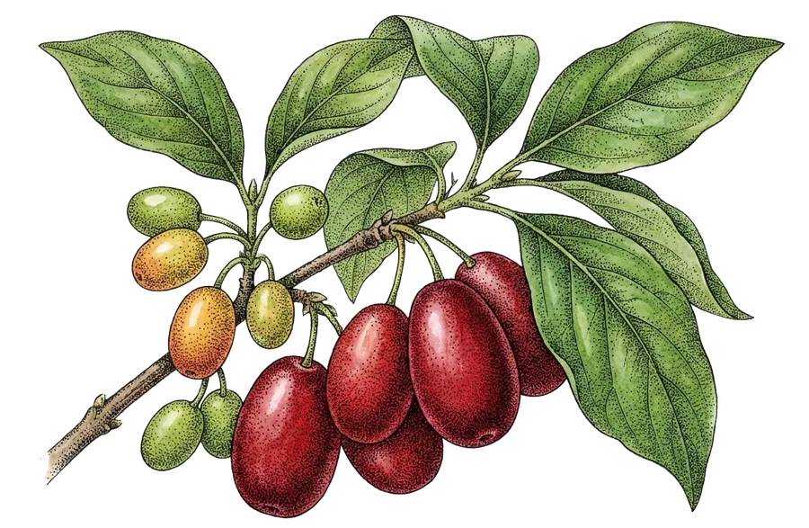

Zašto se kaže „zdrav ko dren“?

Kada u našim krajevima za nekoga kažu da je „zdrav ko dren", to je najveći kompliment koji zdravlje može dobiti. A razlog nije slučajan — dren je jedno od najžilavijih i najljekovitijih stabala naših planina.
Malo drvo, velika snaga
Dren (Cornus mas) cvjeta prvi u proljeće, dok još snijeg drži sjenovite strane, a plodove daje među posljednjima — u ranu jesen. Ta njegova tvrdoglavost i izdržljivost ušle su u narodne izreke: drvo mu je toliko tvrdo da tone u vodi, a stablo doživi i preko sto godina.
Šta se krije u jarkocrvenoj bobici?
Drenjina je prava mala apoteka iz prirode:
- Vitamin C — drenjina ga sadrži i do dva puta više od limuna, po čemu je među najbogatijim evropskim divljim voćem.
- Željezo i minerali — zbog kojih se tradicionalno preporučivala kod malokrvnosti.
- Antioksidansi i antocijani — prirodni pigmenti koji bobici daju duboku crvenu boju.
- Taninske materije — zbog kojih je narodna medicina drenjinu vjekovima koristila za smirivanje stomaka.
Od bobice do tegle
Upravo zato što se drenjina brzo kvari svježa, naši preci su izmislili bezbroj načina da je sačuvaju: sušenje, turšiju, slatko, pekmez, rakiju... U Domaćinstvu Jović sve te načine i danas njegujemo — a najviše naš mućeni pekmez, koji se ne kuva, pa čuva i ono što kuvanje obično odnese.
Napomena: naši proizvodi su tradicionalna hrana, a ne lijek — za zdravstvene savjete obratite se svom ljekaru.
When people in our region say someone is "healthy as a dren", it is the highest compliment health can receive. And there is a reason — the cornelian cherry is one of the toughest and most healing trees of our mountains.
A small tree with great strength
The dren (Cornus mas) is the first to blossom in spring, while snow still lingers on shaded slopes, and among the last to bear fruit — in early autumn. Its stubbornness and endurance made it proverbial: its wood is so dense it sinks in water, and a tree can live for over a hundred years.
What hides inside the bright red berry?
The cornelian cherry is a little natural pharmacy:
- Vitamin C — up to twice as much as lemon, making it one of Europe's richest wild fruits.
- Iron and minerals — which is why it was traditionally recommended for anaemia.
- Antioxidants and anthocyanins — natural pigments that give the berry its deep red colour.
- Tannins — the reason folk medicine used the berry for centuries to calm the stomach.
From berry to jar
Precisely because the fresh berry spoils quickly, our ancestors invented countless ways to preserve it: drying, pickling, preserves, pekmez, brandy... At Domaćinstvo Jović we still nurture all of them — above all our whipped pekmez, which is never cooked, so it keeps what cooking usually takes away.
Note: our products are traditional food, not medicine — for health advice, consult your doctor.